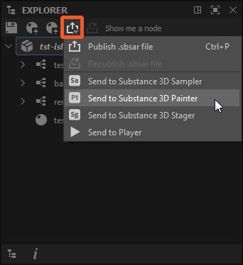

Set the Type attribute in a Substance graph's properties

Adobe Substance 3D Designer has interoperability with Substance 3D Sampler, Substance 3D Painter and Substance 3D Stager. It allows you to send and resend you work over quickly, facilitating iteration across the Substance 3D ecosystem.
The workflow is usually the following:
-
-
In the Explorer panel, select the package you wish to send
-
In the Explorer's Publish/Send drop-down, select the target application
-
Make changes to graph(s)
-
Repeat step 3 to resend the package and update the existing sent asset with your changes
Alert
Interoperability features are not available in the Steam version.
In this page
Setting the graph type
Substance graphs can have many functionalities. You will have to define in advance what the exact functionality of a graph is, to make sure it can be sent over properly.
In the Attributes section of a Substance graph's properties, there is a Type option, with a dropdown that has the following options:

- Unspecified is the default type if you have not set it. Depending on what application you send to, it might be interpreted differently. Substance 3D Painter will default to Material for example;
- Standard Material is for multi-channel PBR materials, with properly labeled outputs;
- Decal Material is for a multi channel PBR material with alpha channel, to be applied as Decal in Substance 3D Painter or Substance 3D Sampler;
- Atlas Material is for a multi-channel PBR material consisting of several atlas images, for use with the Atlas Scatter node in Designer or Substance 3D Sampler;
- Filter is for general-purpose filters, both used in Substance 3D Painter or Substance 3D Sampler;
- Mesh-Based Generator is for multi-input mask generators. This is used only by Substance 3D Painter;
- Texture Generator is for single-channel maps, like 2D procedurals and noises;
- Environment Light is for a single-channel Lighting Environment, used to light scenes and objects;
- Light texture is for a single channel texture applied to a physical Light.
'Send to' menu
The sending process involved publishing one or more packages to Substance 3D asset files (SBSAR) behind the scenes.
Sending content may performed in the following ways:
- Right-click on a package and open the Send to... submenu in the contextual menu, then choose the Send to... option for the target application;
- Click on the
 Publish/Send button at the top of the Explorer panel, then choose the Send to... option for the target application.
Publish/Send button at the top of the Explorer panel, then choose the Send to... option for the target application.

Resending
When sending again a package which was already sent once to the same target application, the asset will be updated in the target application with the new version.
Send to Player
Substance Player has support for both Substance 3D files (SBS) and Substance 3D assets (SBSAR).
Sending to Player requires that the Substance Player executable is manually located by the user, which may be done:
- When prompted if Player was never located since Designer was installed;
- At any time in the Tools menu, using the Substance Player > Locate... option.
In Player, receiving from Designer requires that the Substance 3D Designer installation directory is manually located by the user, which may be done:
- When prompted if Designer was never located since Player was installed;
- At any time in the Options menu, using the Locate Adobe Substance 3D Designer option.
Note
When sending Substance 3D files (SBS) to Player, a Substance 3D asset (SBSAR) is published as a temporary file.
Error sending package to Substance 3D Painter. Check the console for details. SBSAR export failed.
This usually is because of standard error and warnings, fix them to solve the issue:
- No output nodes defined in your graph. Add output nodes and connect something to them;
- Missing or broken variables in Get nodes in function graphs. Track them down by the yellow warning badge on impacted nodes.